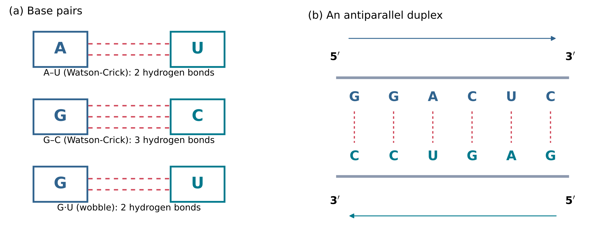
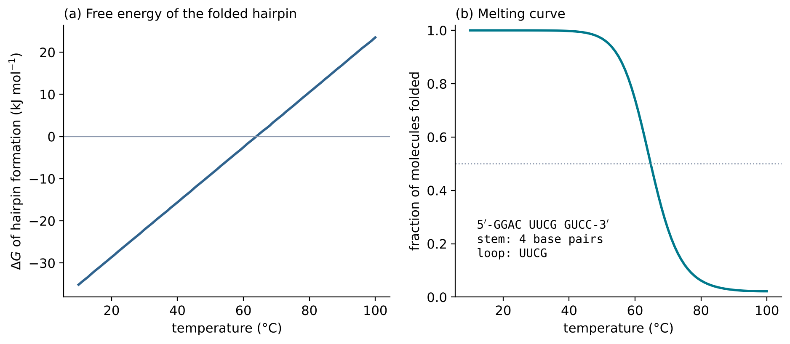
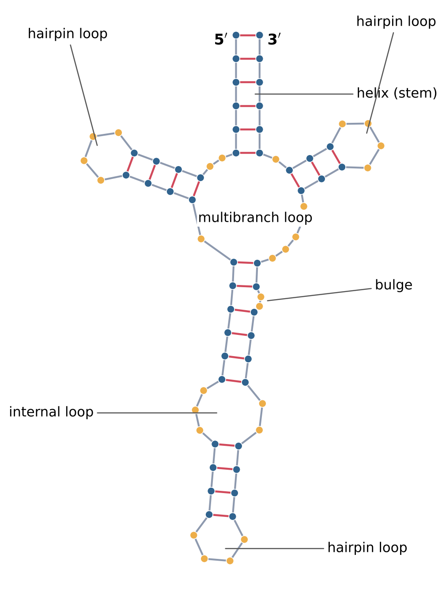
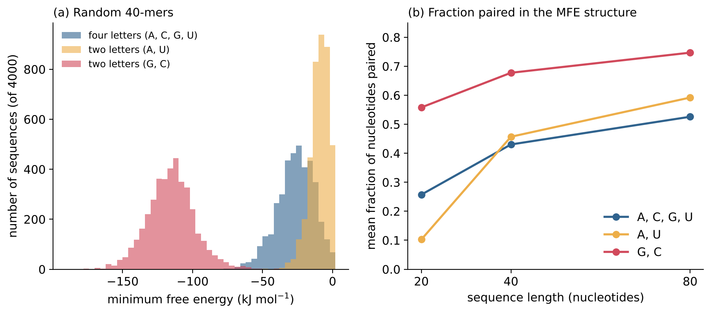

7 Folding into Shapes
Learning objectives
After reading this chapter you should be able to:
- Describe the Watson-Crick base pairs and the G·U wobble pair, and explain why paired strands are antiparallel.
- Explain how base stacking and base pairing together stabilise a double helix, and calculate the free energy of a short helix with the nearest-neighbour model.
- Relate the free energy of a structure to the fraction of molecules that adopt it, and define the melting temperature.
- Name and recognise the elements of RNA secondary structure, and write a structure in dot-bracket notation.
- Explain the principle of minimum free energy structure prediction.
- Define a ribozyme, describe the discovery of catalytic RNA, and explain how in vitro selection isolates functional molecules from random sequences.
- Estimate the size of sequence space, and discuss what is known about how common folded and functional sequences are within it.
7.1 Base pairing
Complementary bases
A single RNA chain (Section 6.1) is flexible. What gives it a defined shape is the ability of its nucleobases (Section 4.5) to form specific hydrogen-bonded pairs (Section 2.5). Two nucleobases joined in this way form a base pair.
The pairs found in double helices of nucleic acids were proposed by Watson and Crick in their model of DNA (Watson and Crick 1953): adenine pairs with thymine, and guanine with cytosine. In RNA, uracil takes the place of thymine. The Watson-Crick base pairs of RNA are therefore A–U, held by two hydrogen bonds, and G–C, held by three (Figure 7.1 a). In each pair a purine faces a pyrimidine, so that both pairs have nearly the same width, and a helix built from any sequence of them has a regular shape. Two sequences that can form Watson-Crick pairs along their whole length are called complementary.
RNA also forms a third pair, between guanine and uracil, held by two hydrogen bonds. In this pair the two bases are shifted relative to each other compared with a Watson-Crick pair; it is called the G·U wobble pair (Figure 7.1 a). G·U pairs occur frequently within RNA helices and are included in the energy parameters used below (Turner and Mathews 2010). In the notation of this book, a dash (A–U) marks a Watson-Crick pair and a centred dot (G·U) a wobble pair.

Antiparallel strands
Base pairs form only when the two strands are antiparallel: one runs from 5\('\) to 3\('\) in one direction, the other from 5\('\) to 3\('\) in the opposite direction (Figure 7.1 b). Thus 5\('\)-GGACUC-3\('\) pairs with 5\('\)-GAGUCC-3\('\), which is its complement read in the 5\('\) to 3\('\) direction. When a single chain folds back on itself, its two paired segments are antiparallel for the same reason. The paired region winds into a right-handed double helix. A molecule made of two separate strands held together by base pairs is called a duplex.
7.2 Duplex stability
Stacking and pairing
Hydrogen bonds alone do not explain why a double helix is stable. When a helix forms, the hydrogen bonds that each base made with water before pairing are replaced by hydrogen bonds to its partner, so the net gain in hydrogen bonding is small. A large part of the stability of a helix comes from base stacking: the flat aromatic rings of neighbouring base pairs lie on top of each other, face to face, along the axis of the helix. Stacking is favoured by dispersion forces between the rings and by the hydrophobic effect (Section 2.5), which drives the non-polar faces of the bases out of contact with water. The contribution of a base pair therefore depends on its neighbours, not only on its own identity.
The nearest-neighbour model
The nearest-neighbour model expresses this dependence quantitatively. The standard Gibbs energy change (Section 2.7) for forming a helix is written as a sum of terms, one for each pair of adjacent base pairs, called a stack, plus a term for starting the helix:
\[ \Delta G^\circ_{\text{helix}} = \Delta G^\circ_{\text{init}} + \sum_{\text{stacks}} \Delta G^\circ_{\text{stack}} \tag{7.1}\]
The stack terms have been measured by optical melting experiments on many short duplexes and are collected in the Nearest Neighbor Database (Turner and Mathews 2010). The current set of RNA parameters is the 2004 set of Turner and co-workers (Mathews et al. 2004). Table 7.1 lists the values for the ten distinct Watson-Crick stacks at 37 °C. The parameters are given in the literature in kcal mol−1; they are converted here to kJ mol−1 (1 kcal = 4.184 kJ).
| Stack | ΔG°37 (kcal mol−1) | ΔG°37 (kJ mol−1) |
|---|---|---|
| 5\('\)-GC-3\('\) / 3\('\)-CG-5\('\) | −3.4 | −14.2 |
| 5\('\)-CC-3\('\) / 3\('\)-GG-5\('\) | −3.3 | −13.8 |
| 5\('\)-CG-3\('\) / 3\('\)-GC-5\('\) | −2.4 | −10.0 |
| 5\('\)-GA-3\('\) / 3\('\)-CU-5\('\) | −2.4 | −10.0 |
| 5\('\)-AC-3\('\) / 3\('\)-UG-5\('\) | −2.2 | −9.2 |
| 5\('\)-AG-3\('\) / 3\('\)-UC-5\('\) | −2.1 | −8.8 |
| 5\('\)-CA-3\('\) / 3\('\)-GU-5\('\) | −2.1 | −8.8 |
| 5\('\)-UA-3\('\) / 3\('\)-AU-5\('\) | −1.3 | −5.4 |
| 5\('\)-AU-3\('\) / 3\('\)-UA-5\('\) | −1.1 | −4.6 |
| 5\('\)-AA-3\('\) / 3\('\)-UU-5\('\) | −0.9 | −3.8 |
Three features of the table are important for what follows. All stacks have negative ΔG°, so every additional base pair stabilises a helix. Stacks containing two G–C pairs are the most stable, and stacks of two A–U pairs the least; the difference is up to a factor of about four. And the order of the bases matters: 5\('\)-GC-3\('\)/3\('\)-CG-5\('\) (−14.2 kJ mol−1) is more stable than 5\('\)-CG-3\('\)/3\('\)-GC-5\('\) (−10.0 kJ mol−1), although both contain the same two pairs.
For two separate strands, the initiation term is positive. It reflects the cost of bringing two independent molecules together into one complex. In the Turner 2004 set it is +4.09 kcal mol−1 (+17.1 kJ mol−1) (Turner and Mathews 2010). As an example, the duplex of Figure 7.1 b contains five stacks, whose values from Table 7.1 sum to −12.4 kcal mol−1 (−51.9 kJ mol−1). With the initiation term, Equation 7.1 gives ΔG°37 \(\approx\) −8.3 kcal mol−1, or −34.8 kJ mol−1. The same value is obtained with the duplex routine of ViennaRNA.
From free energy to populations
A free energy determines what fraction of molecules adopt a structure. For a molecule that is either folded (F) or unfolded (U), with ΔG = GF − GU, the ratio of the two populations at equilibrium is [F]/[U] = exp(−ΔG/RT), where R is the molar gas constant and T the absolute temperature (Section 2.8). The fraction folded, \(\theta\), is therefore
\[ \theta = \frac{1}{1 + \exp(\Delta G / RT)} \tag{7.2}\]
At 37 °C, RT = 8.314 × 310.15 J mol−1 = 2.58 kJ mol−1. A structure that is 10 kJ mol−1 more stable than the unfolded state is present in about 98 percent of molecules; one that is 20 kJ mol−1 more stable, in more than 99.9 percent.
Melting temperature
ΔG depends on temperature through ΔG = ΔH − TΔS (Section 2.7). Forming a helix releases enthalpy (ΔH < 0, from stacking and pairing) and lowers the entropy (ΔS < 0, because the chain becomes ordered). At low temperature the enthalpy term dominates and the helix is stable; at high temperature the entropy term dominates and it falls apart. The temperature at which ΔG = 0, so that half of the molecules are folded in the two-state model, is the melting temperature, Tm = ΔH/ΔS.
Figure 7.2 shows this behaviour for the 12-nucleotide chain 5\('\)-GGACUUCGGUCC-3\('\), which folds back on itself into a stem of four base pairs closed by the four-nucleotide loop UUCG. The stem contributes three stacks (−13.8, −10.0 and −9.2 kJ mol−1 from Table 7.1, total −33.1 kJ mol−1) and the loop a destabilising +15.5 kJ mol−1, giving ΔG°37 = −17.6 kJ mol−1. Because the two halves belong to one molecule, there is no intermolecular initiation term. From the computed values at 25 °C (−25.4 kJ mol−1) and 60 °C (−2.6 kJ mol−1), the line of Figure 7.2 a gives ΔS \(\approx\) −0.65 kJ K−1 mol−1 and ΔH \(\approx\) −220 kJ mol−1, so that Tm = ΔH/ΔS \(\approx\) 337 K, or 64 °C. The full calculation, which also includes partly paired alternative structures, gives the melting curve of Figure 7.2 b, in which half of the molecules are completely unpaired at 65 °C.

Two consequences matter for the origin of life. First, short helices are only marginally stable: a stem of four base pairs melts at about 64 °C, and one of two or three base pairs does not form at all at ordinary temperatures. Second, the melting temperature rises with the length and G–C content of a helix. A hot environment therefore favours single strands, and a cool one favours folded structures and duplexes; this trade-off returns in Section 8.3, where two strands must be separated in order to be copied.
7.3 Secondary structure
Definitions
The set of base pairs formed by an RNA molecule is its secondary structure. The three-dimensional arrangement of its atoms is its tertiary structure. The secondary structure is usually restricted to pairs that are nested: if nucleotide i pairs with j, and k pairs with l, with i < k, then either i < k < l < j (one pair lies inside the other) or i < j < k < l (the pairs lie side by side). Pairs that cross, with i < k < j < l, form a pseudoknot; pseudoknots occur in natural RNAs but are excluded from the standard prediction methods described below. A hairpin loop must contain at least three unpaired nucleotides, because a shorter loop cannot span the distance between the two strands of a helix (Turner and Mathews 2010).
A nested secondary structure can be written in dot-bracket notation: a string of the same length as the sequence, in which each paired nucleotide is shown by a bracket, opening for the 5\('\) partner and closing for the 3\('\) partner, and each unpaired nucleotide by a dot. The hairpin of Figure 7.2 is written
GGACUUCGGUCC
((((....))))Structural elements
A nested secondary structure can be decomposed uniquely into a small set of elements (Figure 7.3):
- A helix, or stem, is a run of consecutive stacked base pairs.
- A hairpin loop is a loop of unpaired nucleotides closed by a single base pair at the end of a helix.
- A bulge is a loop between two helices with unpaired nucleotides on one strand only.
- An internal loop is a loop between two helices with unpaired nucleotides on both strands.
- A multibranch loop, or junction, is a loop from which three or more helices radiate.
- The exterior loop contains the unpaired nucleotides that are not enclosed by any base pair, including the two ends of the chain.
In the energy model, every stack contributes the negative free energy of Table 7.1, and every loop contributes a positive free energy, which accounts for the entropy lost when the unpaired nucleotides are held in a closed ring. The loop terms depend on the size and type of the loop and, for some small loops, on their sequence (Turner and Mathews 2010). The stability of a structure is the sum of all these terms.

7.4 Predicting structure
The number of possible structures
How many secondary structures can a chain form? If any two nucleotides could pair, subject only to nesting and the minimum hairpin loop of three, a simple recursion gives 65 possible structures for a chain of 10 nucleotides, about 1.1 × 105 for 20, 6.3 × 1011 for 40 and 5.6 × 1025 for 80 (author’s calculation). The number grows roughly by a constant factor with each added nucleotide, that is, exponentially. Base-pairing rules exclude most of these structures for a given sequence, but far too many remain to be examined one by one.
Minimum free energy folding
Under the conditions of a folding experiment, a molecule is expected to spend most of its time in the structure of lowest Gibbs energy, the minimum free energy (MFE) structure, if that structure is clearly more stable than all others (Equation 7.2). Zuker and Stiegler showed in 1981 that the MFE structure can be found without listing all structures, by dynamic programming (Zuker and Stiegler 1981). The method exploits nesting: the best structure of a segment from nucleotide i to nucleotide j can be built from the best structures of shorter segments, which are computed first and stored. The computing time grows only as the cube of the length of the chain, so that molecules of hundreds of nucleotides can be folded routinely on an ordinary computer.
The same recursions can be used to calculate the sum of exp(−ΔG/RT) over all structures, the partition function Z. The probability of any single structure s is then
\[ p(s) = \frac{\exp(-\Delta G_s / RT)}{Z} \tag{7.3}\]
where ΔGs is its free energy relative to the unfolded chain. Equation 7.2 is the special case of Equation 7.3 with two states. These calculations are implemented in the ViennaRNA package (Lorenz et al. 2011), used for all folding calculations in this chapter, which applies the Turner 2004 parameters (Mathews et al. 2004).
Predicted structures are models. The energy parameters were measured for short model duplexes and loops, in solutions of defined salt content; tertiary interactions, pseudoknots and bound metal ions are not included. Predictions are most reliable for short molecules with stable helices, and less reliable for long molecules whose function depends on tertiary structure.
7.5 From shape to function: ribozymes
Enzymes made of RNA
An enzyme is a biological catalyst (Section 2.8). Until the early 1980s, all known enzymes were proteins. A ribozyme is an RNA molecule that acts as a catalyst. The existence of ribozymes was demonstrated by two independent discoveries.
In the ciliate Tetrahymena, the precursor of a ribosomal RNA contains an intervening sequence that must be removed, and the flanking pieces joined, in a process called splicing. The group of Thomas Cech found that the purified precursor RNA, incubated with monovalent and divalent cations and a guanosine factor, spliced itself: the intervening sequence was cut out, with guanosine attached to its 5\('\) end, and the flanking RNA was joined. The authors concluded that “splicing activity is intrinsic to the structure of the RNA, and that enzymes, small nuclear RNAs and folding of the pre-rRNA into an RNP are unnecessary for these reactions” (Kruger et al. 1982).
Ribonuclease P is an enzyme of RNA and protein that cuts the precursors of transfer RNAs. The groups of Sidney Altman and Norman Pace showed that the RNA components of the enzyme from two bacteria, Escherichia coli and Bacillus subtilis, cleave the precursors on their own in solutions containing 60 mM Mg2+, or 10 mM Mg2+ with 1 mM spermidine. Under these conditions, “the RNA acts as a true catalyst … whereas the protein moieties of the enzymes alone show no catalytic activity”; at lower Mg2+ concentrations without spermidine both subunits were required (Guerrier-Takada et al. 1983).
Altman and Cech received the Nobel Prize in Chemistry 1989 “for their discovery of catalytic properties of RNA” (Nobel Prize Outreach, n.d.).
Catalysis by RNA depends on folding. A ribozyme positions the reacting groups of its substrate next to each other, and next to bound metal ions or to functional groups of its own nucleotides, so that the transition state (Section 2.8) is stabilised. Only a molecule with a defined three-dimensional structure can do this. A ribozyme is therefore both a sequence, which can in principle be copied, and a folded catalyst. This dual role is the basis of the RNA world hypothesis, introduced in Section 8.1.
In vitro selection
The natural ribozymes were discovered in living cells. In 1990, two groups showed that RNA molecules with a desired property can also be isolated from a large collection of synthetic sequences, by in vitro selection. The procedure has three steps, repeated in cycles:
- A pool of RNA molecules is prepared in which part of the sequence is random, so that the pool contains a very large number of different sequences.
- The molecules that have the desired property, for example binding to a target molecule fixed on a solid support, are separated from those that do not.
- The selected molecules are copied and amplified with enzymes to form the pool for the next cycle.
Because each cycle enriches the pool in active molecules, a few cycles can isolate sequences that were initially extremely rare. RNA molecules selected to bind a specific target are called aptamers.
Ellington and Szostak isolated, from a population of random-sequence RNA molecules, subpopulations that bind specifically to a variety of organic dyes. They estimated that “roughly one in 1010 random sequence RNA molecules folds in such a way as to create a specific binding site for small ligands” (Ellington and Szostak 1990).
Tuerk and Gold randomised an eight-nucleotide region of an RNA that binds the DNA polymerase of bacteriophage T4, giving a pool of 48 = 65 536 sequences. Cycles of selection for binding and amplification yielded two sequences: the natural sequence, and a variant differing from it at four positions, with equivalent binding constants. The title of their paper names the method: systematic evolution of ligands by exponential enrichment, abbreviated SELEX (Tuerk and Gold 1990).
In vitro selection was soon applied to catalysis. Bartel and Szostak isolated new ribozymes from a large pool of random-sequence RNA. The ribozymes ligate two RNA molecules aligned on a template, by catalysing the attack of a 3\('\)-hydroxy group on an adjacent 5\('\)-triphosphate. This forms a 3\('\),5\('\)-phosphodiester bond, the reaction used by the protein enzymes that synthesise RNA in cells. After further cycles of selection, ribozymes emerged whose reaction rates were 7 million times faster than the uncatalysed reaction (Bartel and Szostak 1993). Ribozymes that join RNA strands are the starting point for the ribozyme polymerases discussed in Section 8.5.
7.6 How common is function?
Sequence space
The set of all sequences of a given length is called sequence space. With four nucleotides, there are 4n sequences of length n. For n = 40 this is 440 \(\approx\) 1.2 × 1024, or 2.0 mol of molecules. The mean mass of an RNA residue is about 321 g mol−1 (the mean molar mass of the four nucleoside monophosphates in Table 5.1, 339.5 g mol−1, minus one water molecule, 18.0 g mol−1), so a single copy of every 40-mer would have a mass of about 26 kg. For n = 100, 4100 \(\approx\) 1.6 × 1060. This is far more than the number of atoms in the Earth, which is less than 4 × 1051: that is the number the Earth would contain if its whole mass, 5.9722 × 1024 kg (Section 3.2), were made of hydrogen, the lightest atom, with a mass of 1.67 × 10−27 kg (Section 1.1). Any real population of RNA molecules, whether in a laboratory or on the early Earth, contains only a vanishingly small fraction of sequence space for chains of this length.
The question for the origin of life is therefore not whether a given functional sequence was present, but how many functional sequences there are, and whether a random sample can be expected to contain any of them. A pool of 1015 molecules, for example, corresponds to 1.7 nmol, about 21 \(\mu\)g of 40-mers. If one sequence in 1010 binds a given small molecule, as estimated by Ellington and Szostak (1990), such a pool would contain about 105 binders.
Most random sequences fold
A necessary condition for function is folding. Figure 7.4 shows the MFE structures of random RNA sequences, computed with ViennaRNA at 37 °C (author’s calculation; 4000 sequences each of length 20 and 40, and 2000 of length 80, for each alphabet). With all four nucleotides, 35 percent of random 20-mers have no stable structure, but only 0.9 percent of random 40-mers and none of the 80-mers; the mean MFE is −5.9, −26.4 and −72.5 kJ mol−1 for the three lengths, and about half of the nucleotides of an 80-mer are paired. The structures are also diverse: the 4000 random 40-mers gave 3882 different MFE structures, and the 4000 random 20-mers gave 682.

Folding depends strongly on the alphabet. Sequences made only of A and U fold weakly, because A–U stacks are the least stable in Table 7.1: 84 percent of random 20-mers of A and U have no stable structure, and the mean MFE of the 40-mers is only −9.4 kJ mol−1. Sequences made only of G and C fold very strongly (mean MFE of the 40-mers −115.3 kJ mol−1), but they can form many alternative structures of similar stability, and their helices are hard to melt. The four-letter alphabet lies between these extremes.
A ribozyme with two letters
Must a functional RNA contain all four nucleotides? Reader and Joyce used in vitro evolution to obtain ligase ribozymes composed of only two nucleotides, 2,6-diaminopurine and uracil. 2,6-Diaminopurine is an adenine analogue with an additional amino group, which allows it to form three hydrogen bonds with uracil instead of the two of an A–U pair. These ribozymes catalyse the template-directed joining of two RNA molecules, one bearing a 5\('\)-triphosphate and the other a 3\('\)-hydroxy group, and form specifically 3\('\),5\('\)-phosphodiester bonds. The fastest had a catalytic rate about 36 000 times the uncatalysed rate (Reader and Joyce 2002). This is far below the rate enhancement of the four-letter ligases of Bartel and Szostak (1993), but it shows that a binary alphabet can encode catalysis.
These results establish two facts and leave one open question. Established: most random RNA sequences longer than a few tens of nucleotides fold into some structure, and functional sequences, such as binders and ligases, can be isolated from random-sequence pools in the laboratory. Open question: how frequent functional sequences are for the activities that matter most for the origin of life, above all the copying of RNA, and whether the short chains that prebiotic chemistry can make (Section 6.7) are long enough to contain them. Chapter 8 takes up this question.
Summary
- RNA forms Watson-Crick pairs, A–U (two hydrogen bonds) and G–C (three), and G·U wobble pairs. Paired strands are antiparallel and wind into a right-handed double helix.
- Helix stability comes from base stacking as well as pairing. In the nearest-neighbour model the free energy of a helix is the sum of stack terms plus an initiation term; G–C stacks are the most stable (down to −14.2 kJ mol−1 at 37 °C), A–U stacks the least.
- The fraction of folded molecules is 1/(1 + exp(ΔG/RT)). Because both ΔH and ΔS of helix formation are negative, helices melt on heating; a four-base-pair hairpin with a UUCG loop melts at about 64 °C.
- Secondary structure is the set of nested base pairs, written in dot-bracket notation and composed of helices, hairpin loops, bulges, internal loops, multibranch loops and the exterior loop. The minimum free energy structure is found by dynamic programming.
- Ribozymes are catalytic RNA molecules, discovered in self-splicing and in ribonuclease P (Nobel Prize 1989). In vitro selection isolates binders and ribozymes, including RNA ligases, from random-sequence pools.
- Sequence space is vast (440 \(\approx\) 1.2 × 1024 sequences of length 40). Most random sequences of 40 or more nucleotides fold; about one in 1010 binds a given small molecule; a ribozyme can be built from only two nucleotides. How common copying activity is remains an open question.
Exercises
- Write the sequence complementary to 5\('\)-GCAUUG-3\('\) in the 5\('\) to 3\('\) direction. Which base pairs does the duplex contain, and how many hydrogen bonds hold it together?
- Explain why a G·U pair can occur within a helix, whereas an A·C or a G·A pair usually cannot form there in the same way.
- Using Table 7.1, calculate the sum of the stack free energies of the duplex 5\('\)-GGACUC-3\('\)/3\('\)-CCUGAG-5\('\) and check the value given in Section 7.2.
- Using Table 7.1, compare the stack free energies of 5\('\)-GCGC-3\('\) and 5\('\)-CGCG-3\('\), each paired with its complement. Which helix is more stable?
- Using Equation 7.2, calculate the fraction folded at 37 °C for structures with ΔG = −5, −10 and −20 kJ mol−1.
- The hairpin of Figure 7.2 has ΔG = −9.1 kJ mol−1 at 50 °C. Calculate the fraction folded at this temperature with Equation 7.2.
- Using ΔH \(\approx\) −220 kJ mol−1 and ΔS \(\approx\) −0.65 kJ K−1 mol−1, calculate ΔG at 37 °C and Tm for the hairpin of Figure 7.2.
- Explain, in terms of enthalpy and entropy, why a helix of two base pairs closed by a hairpin loop does not form at 37 °C.
- Write the dot-bracket notation for a 20-nucleotide chain in which nucleotides 1 to 5 pair with 16 to 20 and nucleotides 6 to 15 are unpaired. Which structural element do nucleotides 6 to 15 form?
- Which of the following pairs of base pairs are nested and which form a pseudoknot: (2, 10) and (4, 8); (2, 10) and (12, 18); (2, 10) and (6, 15)?
- Calculate the number of different RNA sequences of length 30, and the mass of one copy of each, using a residue mass of 321 g mol−1.
- In the experiment of Tuerk and Gold (1990), how many cycles of 10-fold enrichment would be needed to raise a sequence from a frequency of 1 in 65 536 to more than half of the pool, assuming the other sequences are not enriched?
- Explain why random sequences made only of A and U fold more weakly than sequences of all four nucleotides, and why the two-letter ribozyme of Reader and Joyce (2002) used 2,6-diaminopurine instead of adenine.